The Range Slider Control supports the following Skins.
· Office2007Blue
· Office2007Black
· Office2007Silver
· Office2010Blue
· Office2010Black
· Office2010Silver
· Blend
· Shiny Red
· Shiny Blue
· VS2010
· Metro
Use Case Scenario
This feature helps users to apply skins for the Range Slider Control. The Supported Skins are listed in
Section 1.1
Samples Link
To run the Range Slider sample:
· Open Essential Studio Dashboard.
· Click Run locally installed samples from the WPF drop-down list.
· Select Tools on the sample browser.
· Select Range Slider -> Range Slider Demo and click the Run Sample button.
How to Apply the Skin
You can apply the skin for the Range Slider control in code behind using the below code snippet.
For more details refer, to SkinManager .
|
[C#] RangeSliderControl RangeSlider = new RangeSliderControl(); RangeSlider.Name = "rangeSlider"; SkinStorage.SetVisualStyle(rangeSlider, "Office2007Blue"); |
You can apply the skin in XAML using the code snippet shown below.
|
[XAML] <Syncfusion:RangeSliderControl x:Name="rangeSlider" Range="10,50" TickFrequency="10" Syncfusion:SkinStorage.VisualStyle="Office2007Blue"/> |
Output for the above code snippet is shown below.
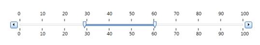
Figure 939: Office 2007Blue Theme for RangeSlidercontrol
Various Themes for RangeSlider control are shown below.
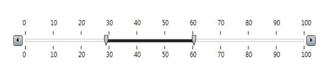
Figure 940: Office2007Black Theme for RangeSlider Control
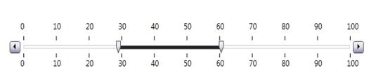
Figure 941: Office2007Silver Theme for RangeSlider Control
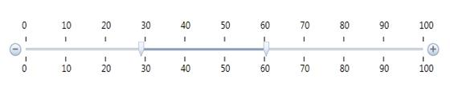
Figure 942: Office2010Blue Theme for RangeSlider Control
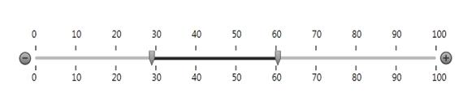
Figure 943: Office2010Black Theme for RangeSlider Control
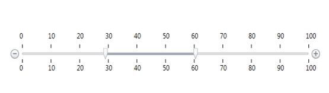
Figure 944: Office2010Silver Theme for RangeSlider Control
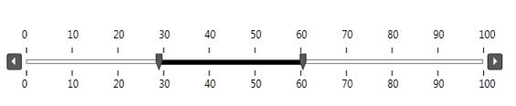
Figure 945: Blend Theme for RangeSlider Control
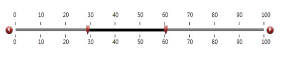
Figure 946: ShinyRed Theme for RangeSlider Control
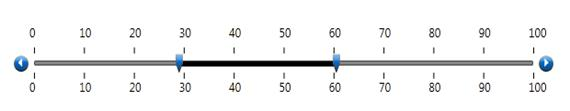
Figure 947: ShinyBlue Theme for RangeSlider Control
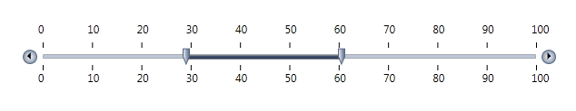
Figure 948: VS2010 Theme for RangeSlider Control
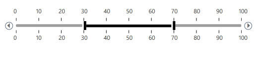
Figure 949: Metro Theme for RangeSlider Control